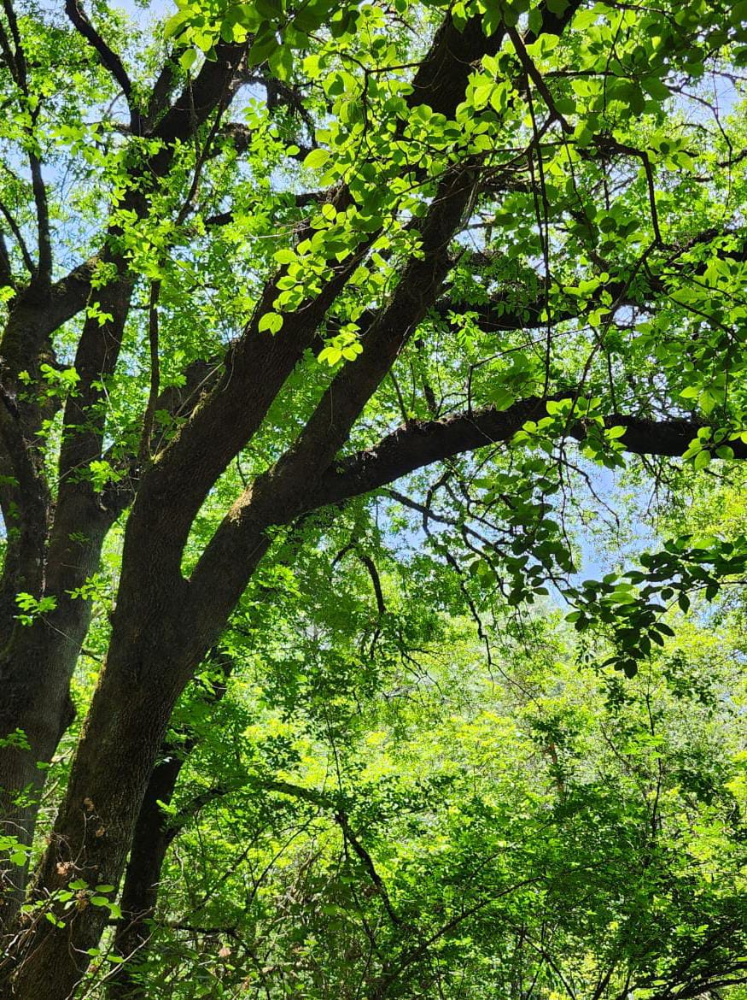
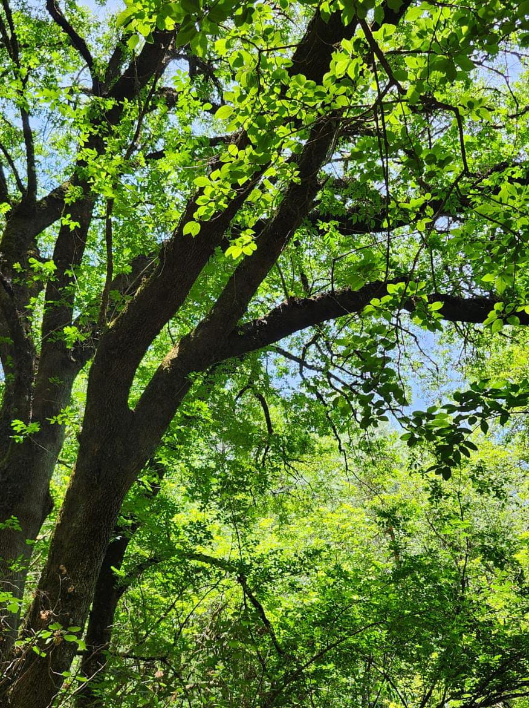
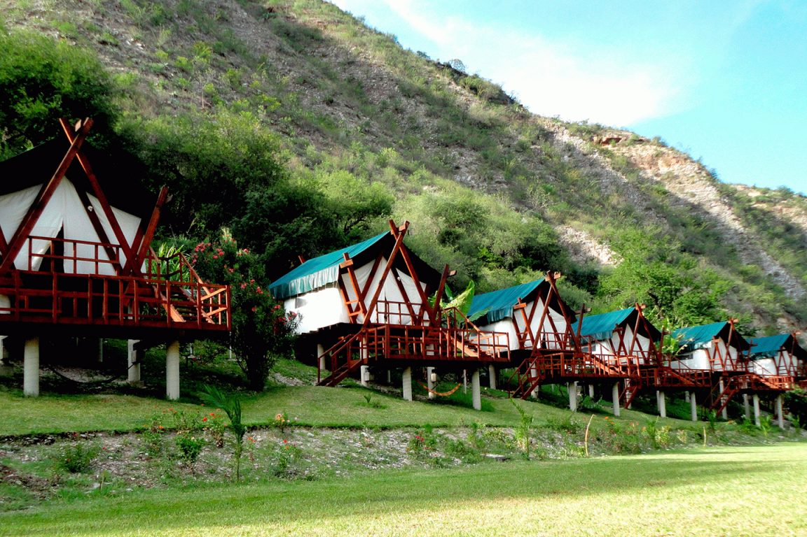
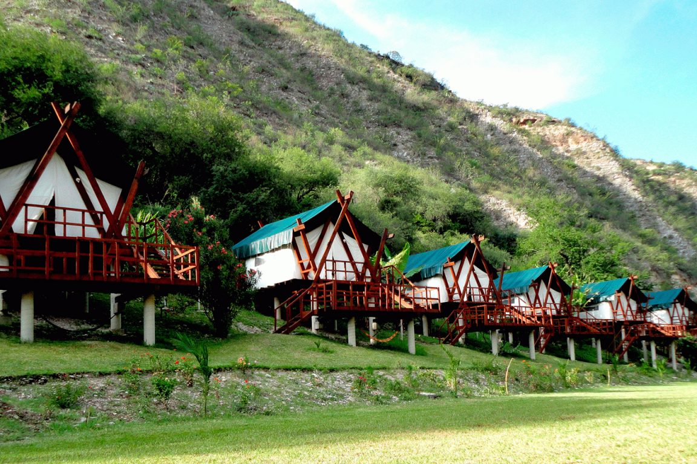
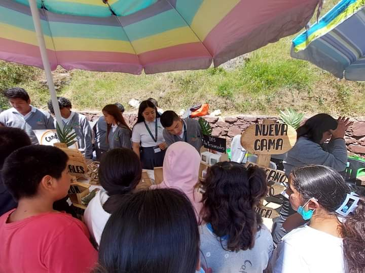
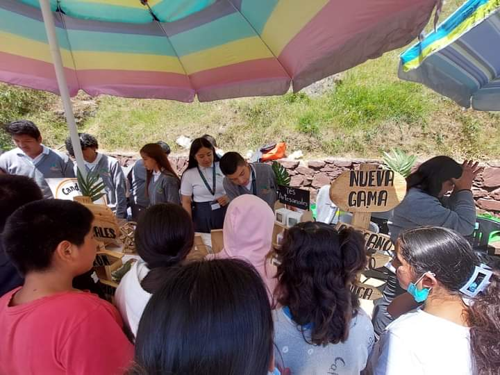
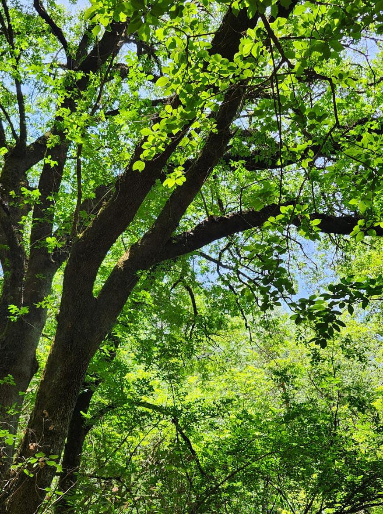
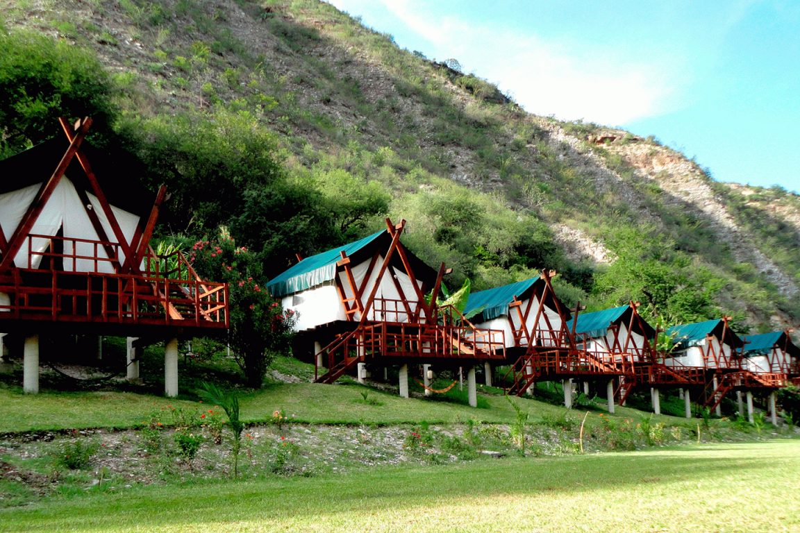
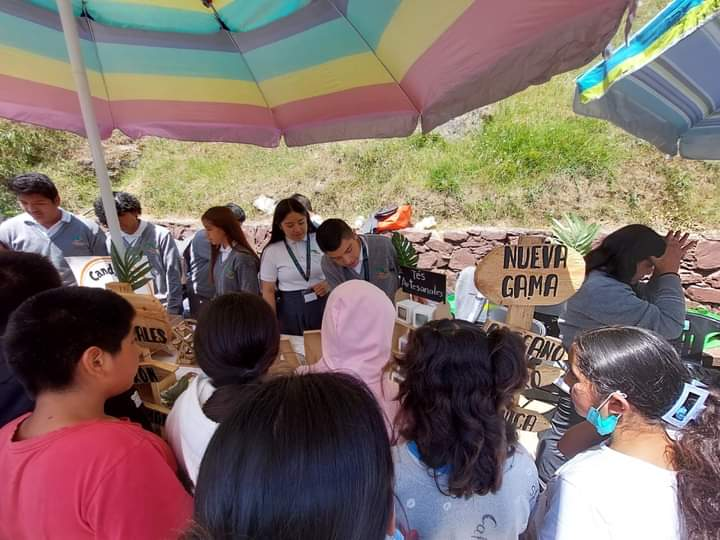

 

 



Pinal de Amoles es un municipio lleno de historia, cultura y belleza natural, ubicado en la Sierra Gorda del estado de Querétaro, México. Fundado el 31 de diciembre de 1931, este municipio es conocido por su impresionante geografía que incluye altas montañas, profundos cañones y ríos cristalinos1. La cabecera municipal, el pueblo de Pinal de Amoles, es el punto de partida para explorar la región. Entre sus atractivos naturales más destacados se encuentra la Cascada El Chuveje, una caída de agua de 35 metros rodeada de una exuberante vegetación, y el Mirador de Cuatro Palos, desde donde se pueden apreciar vistas panorámicas de la Sierra Gorda2. El Cañón El Infiernillo es otro sitio de interés para los amantes de la aventura, ofreciendo oportunidades para practicar rapel y disfrutar de la naturaleza en su estado más puro. Además, la Puerta del Cielo es un punto emblemático en la carretera más alta de la región, donde se dice que las vistas te hacen sentir como si estuvieras en la entrada al paraíso2. Pinal de Amoles no solo es rico en paisajes naturales, sino también en cultura. La gente de Pinal es conocida por su hospitalidad y por mantener vivas las tradiciones y costumbres de la región. La gastronomía local es otro de los grandes atractivos, con platillos que reflejan la mezcla de influencias indígenas y españolas. En resumen, Pinal de Amoles es un destino que ofrece una combinación única de aventura, cultura y belleza natural, ideal para aquellos que buscan una experiencia auténtica en el corazón de México12.


